Dynatrace AppMon 实战手册 - 27.Dynatrace Web 客户端使用说明
在 2019-06-19 Wednesday 发布于 Observability 分类 • 2 min read
1 Dynatrace AppMon Web管理¶
Dynatrace AppMon Web 是一个基于HTML5的页面应用，可以通过以下默认地址访问：
https://<servername>:9911
AppMon Web是用于浏览器分辨率至少为1024×768的平板设备和桌面设备。
为了最佳的使用体验，推荐使用经过测试的最新版本的浏览器： IE11、Edge、Firefox 45+、Chrome 53+、Safari 9.1+。
老版本的Firefox、Chrome和Safari可以显示AppMon Web，但是一些功能可能显示效果不佳。
1.1 安全证书安装¶
当登陆AppMon Web时，浏览器可能会提示安全警告。这是因为浏览器无法识别AppMon Web安全证书。如果该信息出现，你可以做以下措施：
- 对于所有的浏览器，你都可以忽略该安全警告，并继续登陆AppMon Web
- 对于Firefox，IE和Safari，你可以添加Dynatrace证书到浏览器信任证书列表
- 对于Chrome，你可以要求你的系统管理员安装AppMon Web安全证书到你的系统的keystore。
1.2 数据展示¶
只有在Dynatrace AppMon 性能仓库中的live session 数据可以在Web仪表板中展示。Stored session 数据，如：内存快照、线程快照、CPU采样、以前存储在硬盘上的Purepath Session是不能在web仪表板中显示的。而这些数据可以在AppMon客户端仪表板中显示。
2 仪表板¶
仪表板是一个在软件应用生命周期中显示不同用例的诊断数据的强力工具。在仪表板中，你可以为不同领域的专家过滤、聚合和注释PurePath相关的信息。
AppMon当前提供2种类型的仪表板：
- 富客户端仪表板
- Web 仪表板
仪表板 - 富客户端 vs Web 见下文。
2.1 仪表板 - 富客户端 vs Web¶
2者很多概念是相同的（如选择系统配置文件和时间范围来显示，过滤其他的条件，创建自定义...）。因为web仪表板使用的是磁贴风格，而富客户端使用的是仪表图(dashlet),所以看起来差别相当明显。
富客户端仪表板
- Dynatrace富客户端的传统信息、分析展现形式是仪表板。
- 因为6.5种很多仪表板只有富客户端可用并且配置更多，所以建议
- 安装一个绿色版的客户端在电脑设备上，并连接到AppMon Server
- 为了持续使用，和更丰富的配置，请安装客户端。
- 可以存储在AppMon Server上并共享仪表板
Web 仪表板
- 频繁使用的仪表板用浏览器，更方便查看
- 不需要安装，直接在浏览器中打开(
https://<DynatraceServer>:9911) - 移动设备观感良好
- 有关键仪表板如事务流
- 你可以通过URL（或在AppMon Server上的一个账户和权限）来共享这些仪表板
2.2 Web仪表板¶
AppMon Web使用最新的web技术来显示直观和可视化的漂亮仪表板，显示内容包括：应用性能、关键基础架构指标。AppMon Web有以下功能和优点：
广泛适用的仪表板
App Owner 仪表板提供应用性能概览视图，你可以使用Operation仪表板迅速定位和浏览基础架构问题。可以共享任何仪表板给用户来交流问题，并帮助你和其他人保持有共同的视图页面。
Web仪表板会显示你应用性能和系统健康、错误和失败等的关键指标，不需要任何配置。
你可以拉取你需要的任何数据，并以此来创建自定义的仪表板。在自定义仪表板中以通过个性化的拖拽来安排磁贴排列。甚至可以选择自定义的HTML和JavaScript资源。
Operation 仪表板
Operation仪表板提供了对系统健康状态的一站式查看。Operation仪表板和它的详细视图包括关键基础架构指标来帮助你发现问题热点。并提供分析和解决问题的起始点。你可以共享任何运维数据给收到该系统健康问题影响的任何团队。
具体见Web仪表板的基础架构监控。
内置Web 仪表板
这些内置仪表板包括主机资源使用率、错误和失败、应用性能和系统健康状态等信息，这些仪表板也为配置自定义仪表板提供了很好的参考。
具体见下文内置仪表板。
为你的数据和团队自定义Web仪表板
创建你需要的数据的自定义仪表板，来监控和防止问题出现。
使用拖拽编辑器，从一系列的磁贴风格中选择一个创建自定义的仪表板布局。每个磁贴都可以调整为你想要的大小。
通过一个独有的URL或者通过包含在报告或展示中的截图图片来和你团队的其他成员共享你的自定义web 仪表板。
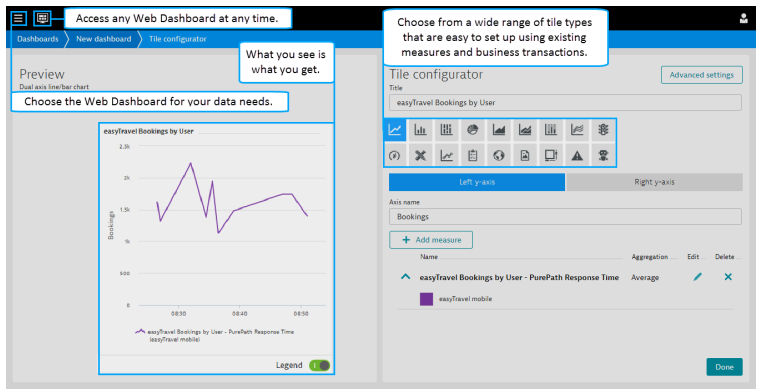
自定义web仪表板 和 共享web仪表板见下文。
易于合作
一起工作更容易。AppMon Web让你轻松共享web仪表板。你的APM团队可以自定义图表来提供基础架构健康状态，应用性能的监控。你也可以导出一组仪表板，这样其他人可以导入它们，或者复制这些仪表板并修改来满足不同的需求。这让团队间更容易一起工作，并加强团队成员合作，帮助团队成员有共同的监控页面。
更多内容见共享 web仪表板
访问AppMon web
必要的权限
AppMon Web 的登陆，需要AppMon 用户至少具有“Use System Profile in Dynatrace Web”的权限。另一个要点，对于特定的web仪表板需要非常关键的权限“Read Confidential Strings”。
内置仪表板
内置web仪表板自动共享给所有可以访问仪表板的用户。
在Dynatrace Web，点击仪表板按钮，然后点击Shared标签页，会看到一系列的内置仪表板。内置仪表板的创建者为Dynatrace，包括下列：
- Application overview
- CDN & 3rd party performance
- Errors & failures overview
- Host resource allocation
- Mobile overview
- User behavior analytics
共享仪表板列表页包括有其他用户共享的仪表板 。
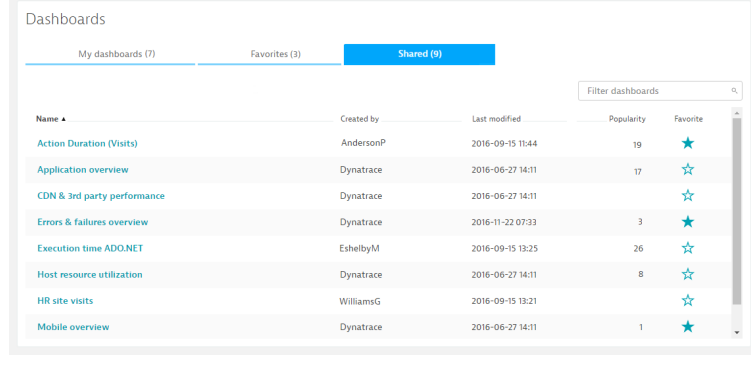
自定义Web仪表板
概览
你可以创建自定义web仪表板来可视化你关注的数据。点击仪表板按钮，在My dashboards里访问自定义的web仪表板。
自定义仪表板是私人的，除非你把对应的URL共享给其他人。通过共享链接打开web仪表板需要Dynatrace用户账户并登陆。
其他重要功能和注意事项包括：
- 自定义web仪表板只显示live session数据。不显示stored session数据。
- 全局时间设置适用于仪表板的所有磁贴。自动刷新频率默认是1 min。
- 每个仪表板最多允许有16个磁贴。
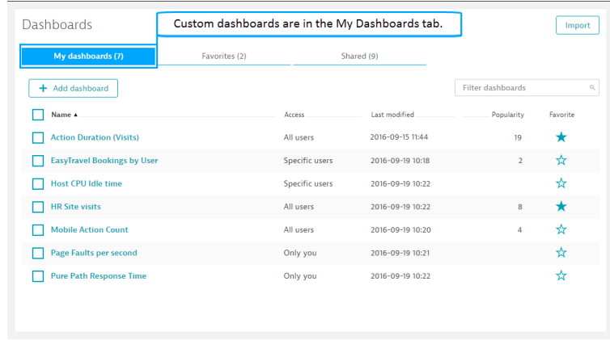
准备工作
创建自定义web 仪表板之前，识别并创建包含你想显示在仪表板上的measure或business transaction信息。创建measure和business transaction需要使用AppMon Client。
当创建你的仪表板布局时，你可以以网格的形式灵活安排16个磁贴的位置和大小。磁贴可以变为需要显示数据的合适的大小。仪表板网格布局支持最大宽度为4磁贴列，最大高度为4磁贴行。磁贴不能堆叠。
自定义布局 - 拖拽来改变磁贴布局和大小
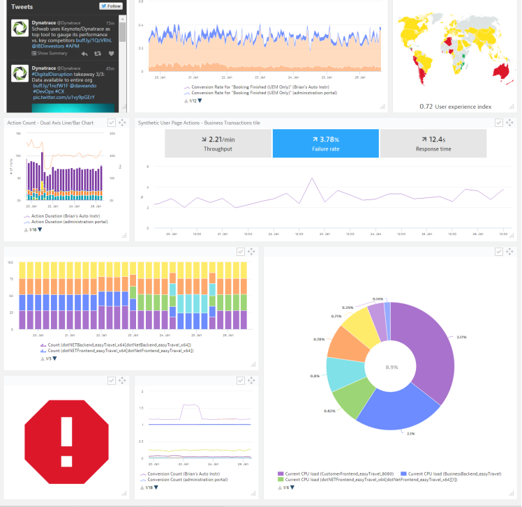
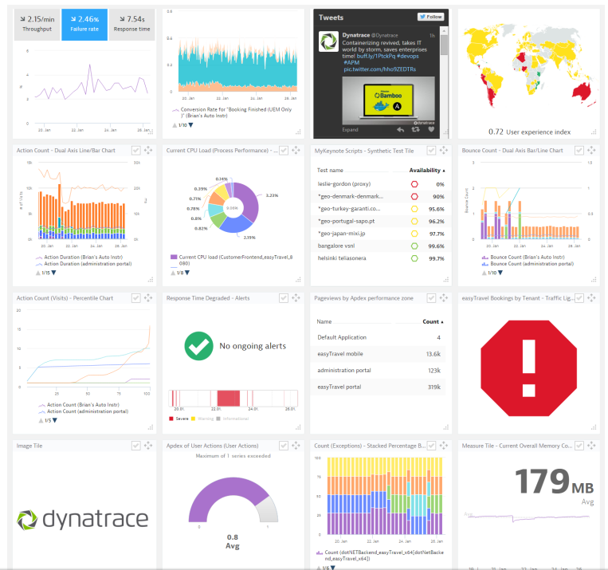
创建自定义web仪表板
- 点击仪表板按钮，在My dashboards里访问自定义的web仪表板。
- 点击Add dashboard按钮。
- 命名仪表板，然后选择系统配置文件和数据时间段。时间段决定了你的仪表板显示的数据。这个值应用于全局的每个磁贴。
- 可选，在Dashboard name旁边点击添加logo图标，输入你喜欢的logo的URL。logo会替换掉默认的图标。
- 点击默认磁贴的Edit title。Tile configurator出现。
- 配置磁贴。参见 Tile Types, Editing a Measure, and the Timeframe and Resolution 查看每种磁贴类型的具体配置。
- 点击Done来关闭Tile configurator 并返回dashboard editor
- 点击在右上角的Done来查看仪表板。每个仪表板都可以点击最大化。
你可以复制自定义仪表板，以及共享自定义仪表板给其他人。从My dashboards里选择你想要复制，点击More Actions按钮,选择Copy。在出现的仪表板中，命名该仪表板，并点击Copy and open。仪表板副本会显示在My tab。
查看 共享Web Dashboards获取共享自定义仪表板的更多信息。
磁贴类型
The following list describes the available tile types that you can add to a custom web dashboard.
| Tile Type | Use |
|---|---|
| 双轴线形/柱状图 & 双轴柱状/线形图 | 可视化两个数据系列或混合类型数据的值的广泛差异 提示: 对于 双轴线形/柱状图, 左y轴显示为线形图，右y轴显示为柱状图。 对于 双轴柱状/线形图, 正相反。 |
| 堆积百分比柱状图 | 以部分对整个系列作出贡献的每个值的百分比来比较一系列中的部分。 |
| 饼图 | 绘制单个数据序列。 |
| 面积图/堆积面积图 | 面积图 -将一个系列作为独立值显示出来， 这对于可视化多个数据系列之间的相对差异很有用。堆积面积图 - 可视化包含数据系列的每个部分的百分比。 |
| 数字仪表 | 在测量值之间相对地比较来可视化和分析数据 |
| 百分位图 | 在所选时间范围内，以0到100的百分位数分析数据系列。Tip: 如果图表有许多测量，则使用对数y轴来增加可读性。 |
| 交通灯图 | 通过交通灯来查看是否超出阈值:OK - 表示没有超出阈值.Problem - 表示选中时间内已经超出严重阈值。Warning - 表示选中时间内已经超出警告阈值。Notes：所选的测量必须具有阈值指标。根据配置的聚合计算阈值违规状态。 |
| Guage Chart | 单个配置的测量结果，用组合的甜甜圈图和饼图列出。 |
| 测量 | 在测量之间用相对比较的方式可视化数据。 |
| 业务分析 | 查看选中的业务分析的指标（响应时间，失败率，吞吐量）。这个图可以交互，每个指标都有显示，你可以选择默认显示那个指标。Notes： 如果选中的指标没有配置为业务分析，那么会显示N/A。 该磁贴不支持业务分析的自定义度量值。 |
| 业务分析列表 | 在一个列表里查看业务分析的拆分值，计算结果，聚合类型 (如总和，平均，最大值)。 |
| World Map | Notes：无UEM license无数据。 |
| Image | 通过URL显示图片。Tip: 图片大小过大会压缩。 |
| 外部内容 | 在一个web 仪表板的磁贴中查看URL里的内容和信息。 |
| 告警 | 获取一个或多个配置的事件条件的结果的一览表。 |
| Synthetic Tests | Notes：需要与Dynatrace的Synthetic产品整合。 |
| 文本和测量 |
添加和编辑测量
测量是图表数据的来源。你可以选择一个或多个测量。
添加和编辑测量
- 打开Tile Configurator，点击Add Measure
- 查找或浏览要添加的测量，然后点击测量列表底部的Done按钮。
- 添加测量后，点击旁边的Edit按钮来修改测量的显示名称，聚合方法，拆分值。
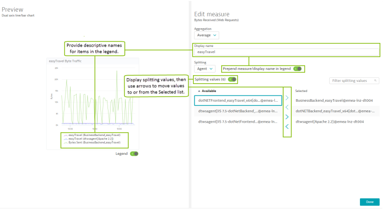
web仪表板时间范围和解析度
时间范围
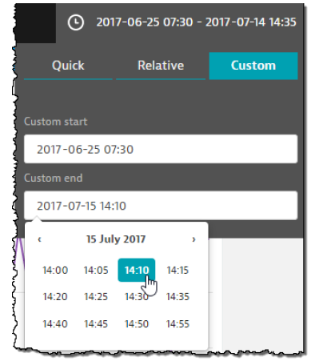
“时间表”下拉列表可在所有网页信息中心的顶部显示，并显示当前用于仪表板的时间范围。点击下拉列表，使用Quick，Relative，Custom标签页来设置web仪表板要显示的时间范围。
- Quick: 点击Quick标签页来使用根据当前时间的相对时间偏移，或者设置时间范围为Today或Yesterday。
- Relative：设置从15min到999天的时间范围，可以从当前时间开始，或者从过去的15 min到999天。
- Custom：点击Custom start和 Custom end，通过弹出的日历框来选择时间。
所有仪表板的时间范围是动态的，并为所有磁贴以1分钟的间隔自动刷新。
根据您选择的测量中的数据量，将时间范围增加到更长的时间段（如30天）可能会导致Web仪表板内容的呈现轻微延迟。
图表解析度
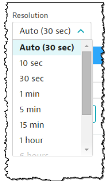
图表分辨率下拉列表定义了显示在仪表板图块上的数据点之间的间隔。默认情况下，分辨率设置为所选仪表板时间范围的最佳间隔值。例如，如果仪表板的时间范围为1小时，则分辨率将自动设置为1分钟。
:heavy_exclamation_mark: 所选仪表板时间框架的最佳间隔值在“分辨率”列表中始终显示为“自动”。
您可以调整分辨率以增加或减少图表上的数据点数，但是，请记住，在设置自定义分辨率值后更改仪表板的时间范围可能会使您的数据失真，从而难以解读。此外，数据点计算是相对于前一个数据点而不是时间帧的第一个数据点。因此，增加分辨率还会增加每个数据点的任何聚合值，因为在给定间隔内有更多的数据点。
共享web仪表板
您创建的自定义Web仪表板仅在您与其他用户共享之前才可以访问。共享视图或仪表板的基本概念是一个持久性的URL，您可以发送或包含在其他资产（如文档或wiki页面）中。
功能
- 通过电子邮件邀请与特定用户共享。只有他们可以看到仪表板。
- 与所有访问AppMon Server的用户共享。仪表板的人气显示有多少用户将仪表板添加到他们的个人收藏夹。
- 与没有AppMon用户帐户的用户共享。请参阅以下部分的指南。
每当您登录到AppMon Web时，都会在仪表板概述中的“共享” - 标签中显示已与您共享的仪表板。
:heavy_exclamation_mark: 打开一个共享的Web仪表板需要一个AppMon用户帐户。
将Web仪表板标记为个人最爱
每当用户与您共享一个价值的web仪表板时，您可以将其添加到您的个人收藏夹。如果仪表板与所有用户共享，这将增加仪表板的受欢迎度及其在列表中的排名，因此您的团队成员轻松查看哪些仪表板最有价值。
公开分享web仪表板
web 仪表板可以公开共享，无需登录即可访问。仪表板的共享URL必须通过用于根据以下语法进行公共共享的用户帐户的用户名和密码进行扩展：
https://<dt server host/ip>:9911/index.jsp?username=<username>&password=<password>#dashboard;db=xxxxxxxx-xxxx-xxxx-xxxx-xxxxxxxxxxxxx
因此，建议使用专用的用户帐户，以便全面控制哪些系统配置文件是公开的。
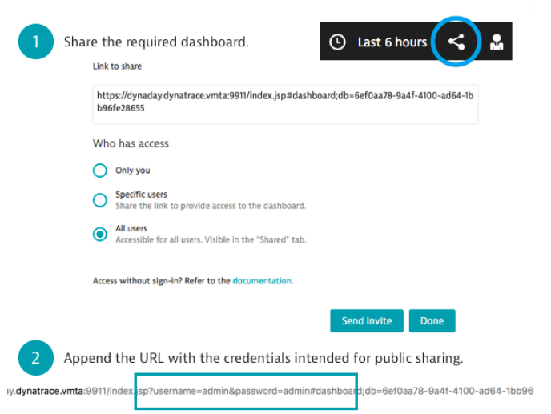
其他报告功能
使用磁贴图像下载功能来创建磁贴图表的可分发PNG或SVG图像文件，以包含在演示文稿中，在wiki页面上发布或发送电子邮件。
要下载磁贴图像，请单击内置或自定义web仪表板的上下文菜单，然后选择要下载的图像格式。
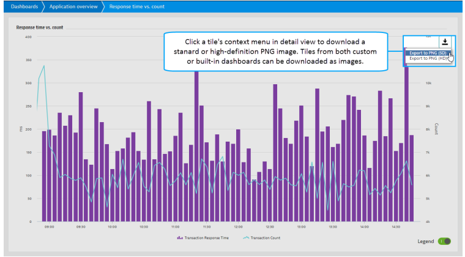
导出和导入web仪表板
Web仪表板导出和导入提供了另一种方式来将您的仪表板与组织中的其他人共享。当需要与其他人共享大量仪表板时，导出功能非常有用。一次可以导出和导入数百个仪表板。只有自定义仪表板可以导出或导入。
导出web仪表板
在AppMon Web中，单击“Dashboards”，然后选择“My”选项卡。显示您的自定义仪表板列表，复选框显示在仪表板条目旁边。
单击要导出的每个仪表板的复选框，然后单击Export按钮。名为DashboardExport.dwd的文件下载到您分配的下载文件夹。使用Windows将文件发送给要与之共享仪表板的其他人。一旦导出文件被复制到可访问的位置，其他人可以使用它导入Web仪表板。
- 导出按钮仅在选择仪表板时显示。
- 单击自定义仪表板标题旁边的复选框以选择列表中的所有自定义仪表板。
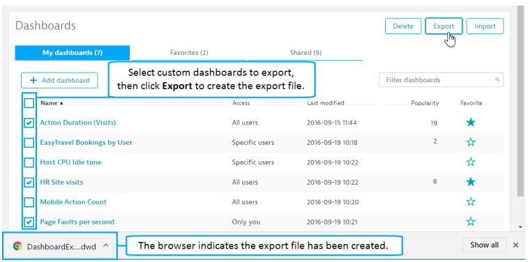
导入Web仪表板
您可以从任何可访问的文件位置导入Web仪表板文件。文件中的所有导出的自定义Web仪表板导入到“自定义仪表板”列表。
要导入自定义Web仪表板文件，请单击Dashboards，然后选择My选项卡以显示自定义仪表板，然后单击Import按钮。
使用操作系统文件浏览器导航到导出文件的位置并选择它。
当出现消息框指示仪表板成功导入时，单击OK。导入的仪表板显示在“自定义仪表板”列表中。
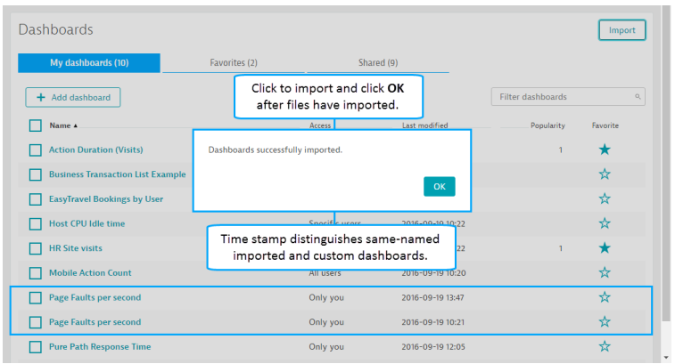
删除自定义web仪表板
您可以删除仪表板，以删除过时或不必要的自定义仪表板，并帮助管理自定义仪表盘列表。
只需点击要删除的每个仪表板的复选框，然后单击Delete按钮。在出现的消息框中单击确定以OK删除。
web仪表板的基础架构监控
运营人员需要持续更新有关环境健康的信息。Operation信息板可让您从任何设备中查看热点，了解导致热点的原因，并分享您的分析给团队中以解决问题。了解您的基础设施或特定应用程序中是否存在问题，跟踪关键事件警报，然后深入了解警报详细信息，事件分配和根本原因分析。
与AppMon Client中的基础设施概述一样，“Operation”面板中的“HOST”视图列出了每个范围内主机的操作系统，并指示其相对运行状况。此外，其主机上每个运行的进程会监控和展示。健康，不健康的进程和当前不运行的进程在详细进程视图中的单独选项卡中，因此您可以快速关注问题进程。
可以选择Operations Dashboard的详细视图中的所有事件警报，并直接跳转到AppMon Client，进行进一步分析和解决主机和进程问题。
在这个仪表版中的磁贴：
- 帮助您监控主机和进程运行状况。
- 确定问题是否与基础设施或应用程序相关，并对应问题事件。
警报通知也可以使用Alert 磁贴类型在自定义Web仪表板上查看。有关详细信息，请参阅磁贴类型。
AppMon客户端深入分析
概览
AppMon Web与AppMon Client一起提供方便的用户体验管理工作流程和基础架构监控功能，用于快速和翔实的根本原因分析。AppMon Web中的几个视图可让您从特定的AppMon Web项目中深入到AppMon Client中打开相应的或详细的数据。
客户端深入分析
- 安装AppMon客户端或AppMon Webstart客户端。
- 在AppMon Web中，打开包含要向下钻取的项目的页面。您可以深入了解以下内容：
| AppMon Web的视图/动作 | AppMon Client 打开 |
|---|---|
| Business analytics > Visits > Visit details | 用户体验的访问 |
| Operations > Infrastructure > 选择alert 或 alert rule | 事件 |
| Operations > Hosts >选择Host name | 事件 |
| Operations > Hosts > 选择Host name | 主机信息 |
| Operations > Processes > 选择Process name | 进程信息 |
:heavy_exclamation_mark: Note: 根据您的浏览器类型，可能会提示您授权加载不安全的脚本，不安全的内容或证书。如果要使用AppMon Client向下钻取，则必须接受浏览器授权请求。如果没有，则默认情况下只打开Webstart客户端。
- 单击访问表下面的Open in client按钮。
如果AppMon Client正在运行，它将启动。如果没有，则Webstart Client启动。一个浏览器消息框会弹出来下载client.jnlp文件。用建议的Java Web Start Launcher打开它来启动客户端。
客户端打开并显示所选信息的详细信息。显示所选的访问信息。
FAQ
我可以将富客户端仪表板转换为网页信息中心吗？
不行。这种情况，使用富客户端创建的仪表板必须重新创建为Web仪表板。
但是，您可以创建富客户端仪表板的HTML报告。HTML报告也可以在浏览器中查看。